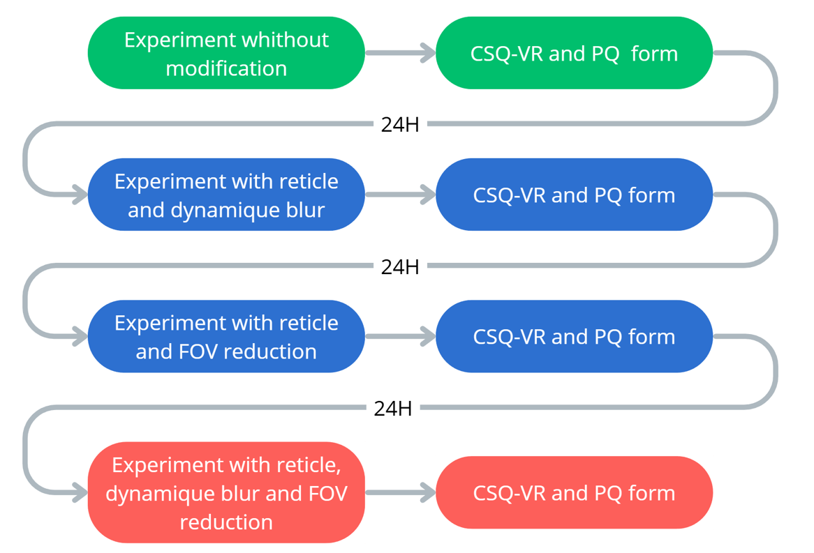
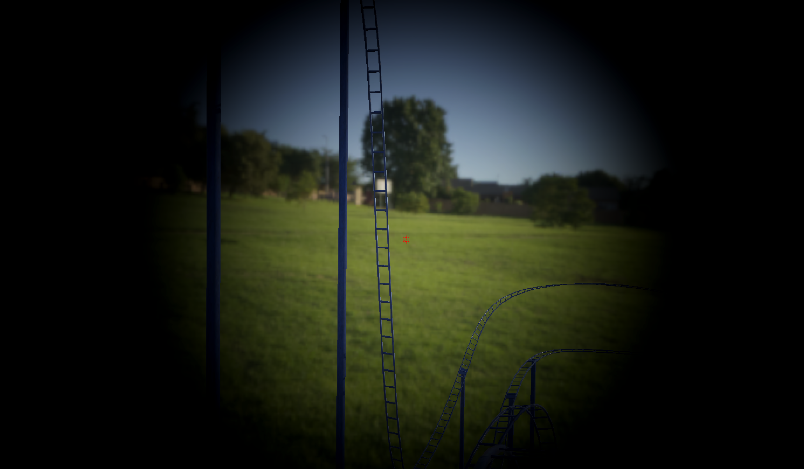
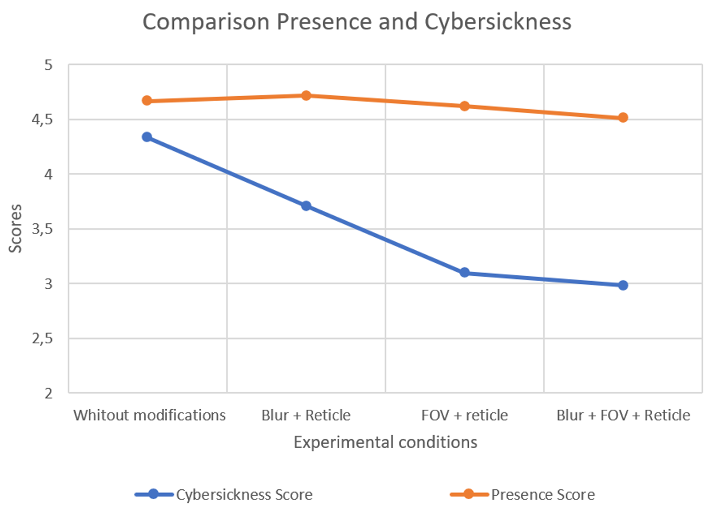
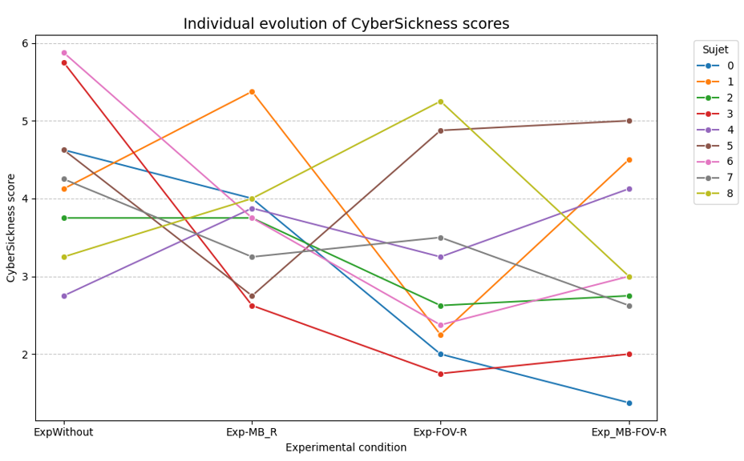
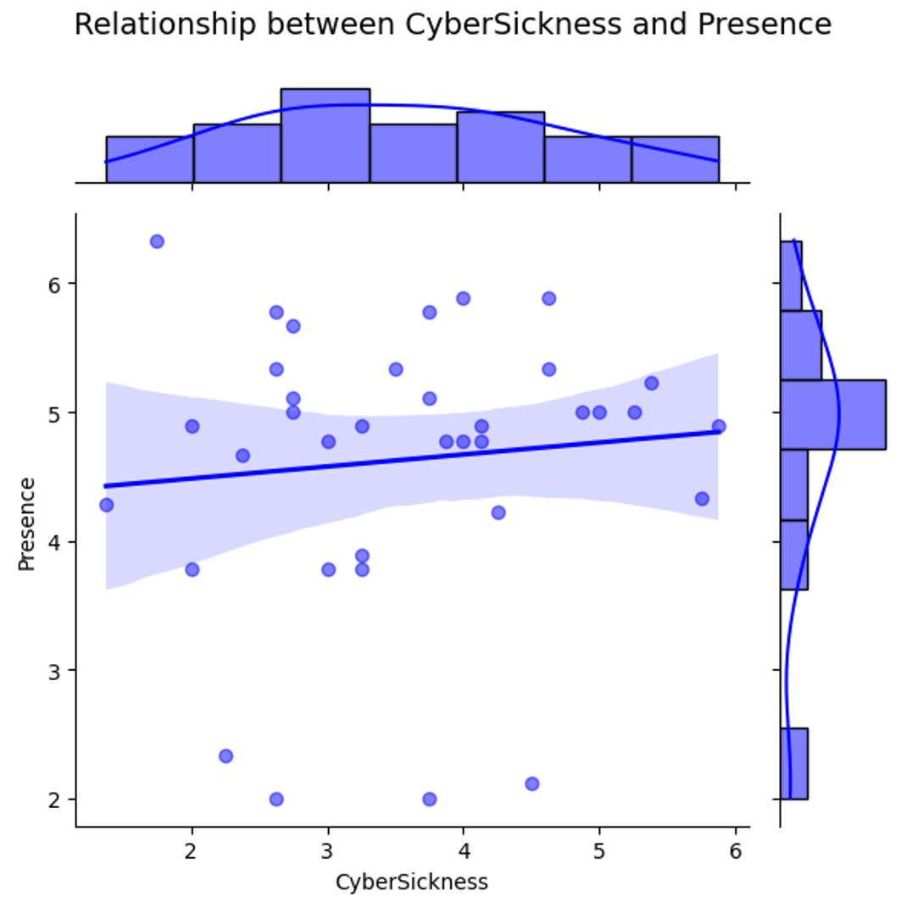

Galerie de l'étude






Recherche scientifique et expérimentation en réalité virtuelle visant à analyser, mesurer et comprendre les facteurs déclencheurs de la cybersickness (cinétose) chez les utilisateurs.
La cybersickness (ou mal de la réalité virtuelle) est aujourd'hui l'un des freins majeurs à l'adoption grand public et professionnelle des casques VR. Les discordances sensorielles provoquent des nausées et des vertiges chez de nombreux utilisateurs.
Dans le cadre de ce projet de recherche intensif, notre équipe a eu pour mission de concevoir un protocole expérimental complet pour évaluer l'impact des environnements et des modes de déplacement sur l'inconfort des utilisateurs.
Il a fallu développer un environnement de test standardisé sur Unity. Le défi était de créer une scène neutre et contrôlée, capable d'isoler des variables spécifiques (vitesse de déplacement, type de locomotion) sans introduire de biais externes dans l'expérience utilisateur.
Pour quantifier l'inconfort de manière scientifique, nous avons mené des sessions de test sur un panel d'utilisateurs. Nous avons utilisé des métriques standardisées, telles que le Simulator Sickness Questionnaire (SSQ), pour croiser les données qualitatives et quantitatives de la passation.
Le temps imparti pour l'expérimentation, la récolte des résultats et la rédaction de l'article était extrêmement court (4 jours). Cela a demandé une coordination parfaite au sein de l'équipe de 3 rédacteurs pour synthétiser nos découvertes sous un format académique rigoureux.




